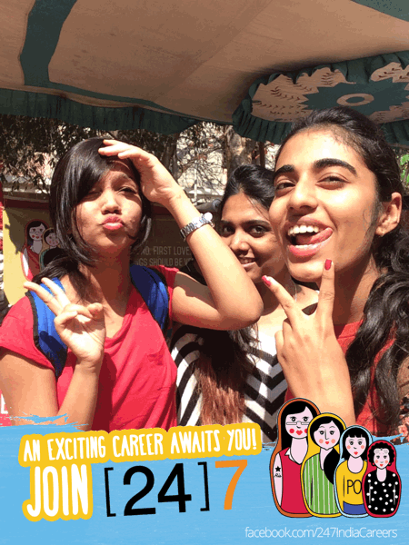
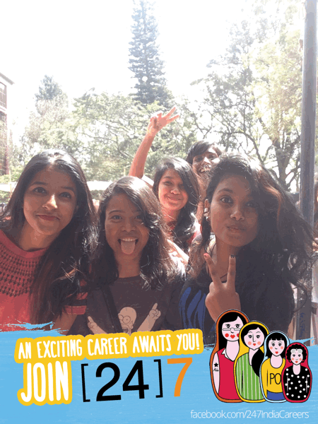
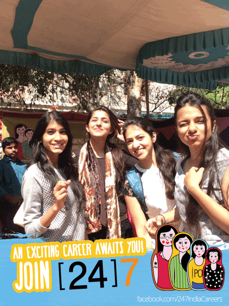
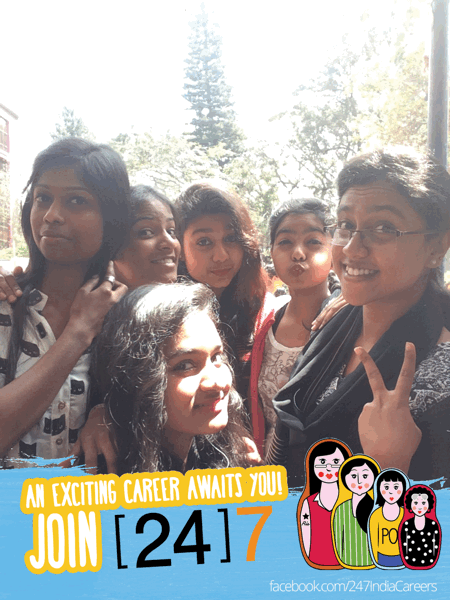

[24]7 Careers
[24/7] is a cloud-based customer engagement solutions provider with offices in over 15 cities across the world. They have over 7000 employees in India, 30% of whom are women. Gender inclusivity has become a major focus for the company. We worked with them on two such gender inclusivity campaigns targeted at two completely different target audiences and boy did we have fun conceptualising and executing the two highly impactful campaigns.
'Matryoshka dolls' represent [24]7's themes for their gender inclusivity agenda for the year and we found innovative ways to use the dolls as the creative theme and spread awareness about the importance that [24]7 gives to gender inclusivity.
Cross Currents is Mt. Carmel Women's College's annual culture fest, where companies can put up stalls to talk to potential candidates about internship and job opportunities. We setup a unique experiential photobooth at the [24]7 stall that would instantly convert pictures into engaging GIFs which had an overlay with [24]7 branding and the Matryoshka dolls. The students had a great time at the booth, with more than half of them eventually becoming fans of the [24]7 Facebook page, where the GIFs were later uploaded.
- 100+PHOTOS TAKEN
- 13,230+SOCIAL IMPRESSIONS VIA PHOTOBOOTH
- 
- 
- 
- 
International Women's Day E-card Campaign
On International Women's Day we conceptualised and executed a fun campaign as part of the Women's Day Celebrations at [24]7. Five e-cards were designed using different Matryoshka dolls, each representing a different character trait. On Women's Day, an e-mailer was then sent out to all employees asking them to choose their favourite e-card from the ones attached and to send it out to the women who've inspired them in their career.
The campaign was a huge success with more than 10,000 e-cards shared on a single day!